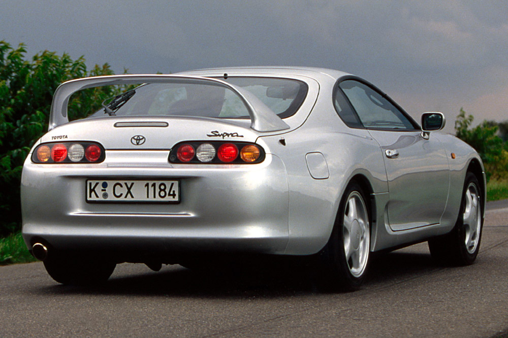
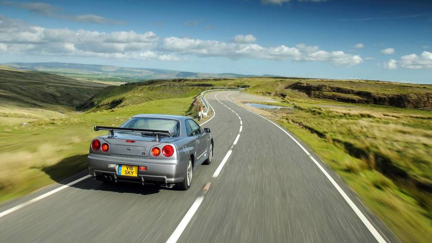
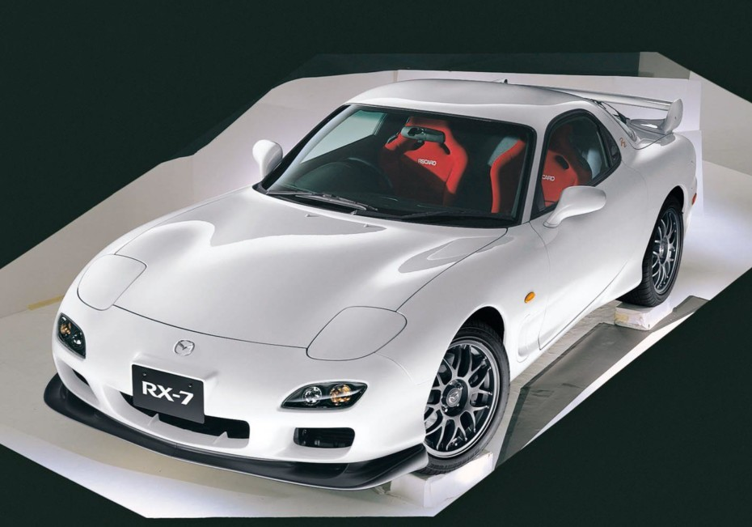

Con el pasar del tiempo la industria automotriz a sufrido cambios significativos, en los cuales el diseño, accesorios, luces y faroles de los nuevos automoviles no se quedan atras, pero mientras sigue avanzando hay coches que para los estusiastas nunca pasaran de moda, y es porque han sido autos iconos de las marcas que en su tiempo sobresalieron ante otros vehiculos, en esta ocacion se presentaran el top 10 de los autos mas populares de la decada de los 90 que robaron la mirada de todos los amantes de los coches.
El Toyota Supra A80 es sin duda el más famoso de todos los Supra. Y no es para menos, pues ofrecía unas prestaciones muy elevadas incluso en términos actuales. Gracias, sobre todo, al desarrollo de un nuevo propulsor de seis cilindros en línea. Nos referimos al archiconocido 2JZ. Disponible en versiones atmosféricas (2JZ-GE) y biturbo (2JZ-GTE), llegaba a producir 330 CV de potencia en mercados internacionales.
Los bloques 2JZ-GE y 2JZ-GTE se combinaban de serie con una caja de cambios manual. En la versión biturbo se trata de una robusta transmisión de seis velocidades fabricada por Getrag. La variante atmosférica recurría a una caja de cinco relaciones heredada del Supra A70. En cualquier caso, ambos motores podían ligarse opcionalmente a una caja automática de cuatro marchas.
NISSAN SKYLINE GTRR34
El R34 supuso la combinación de dos elementos fundamentales: la turboalimentación, junto a la tracción a las cuatro ruedas. De esta forma, era capaz de detener el reloj, en la maniobra de aceleración de 0 a 100 km/h, en solo 4,7 segundos. Un registro impresionante, casi dos décadas después. Debajo del capó, encontramos una mecánica de 2,6 litros de cilindrada turboalimentada, que desarrollaba una potencia máxima de 276 CV. Al menos, de forma oficial, porque numerosas unidades de pruebas analizadas posteriormente, alcanzaban los 300 CV. La caja de cambios elegida era manual, con una relación de cambio corta.
Nissan modificó y desarrolló este GT-R a lo largo de sus tres años de vida comercial. Las versiones V-Spec añadieron elementos aerodinámicos fabricados con fibra de carbono. Además, las versiones N1 y V-Spec II redujeron el peso y añadieron un turbocompresor de mayor tamaño. El M-Spec incluyó un interior más lujoso y una suspensión más suave y confortable. Más tarde, la edición especial Nürburgring para el mercado japonés podían llegar a una velocidad máxima de 300 km/h.
MAZDA RX7MK3
En su tercera y última generación que llegó en 1992, el RX-7 fue un verdadero automóvil de alto rendimiento. Con un nuevo turbocompresor doble secuencial, el motor aumentó la potencia a 239 hp. Considerado por los entusiastas como el mejor de todos los RX-7 por su fácil manejo, y su capacidad de aceleración demostrada en los 5.3 segundos que tardaba en hacer el 0 a 100 km/h y una velocidad máxima (autolimitada) de 250 km/h.
Según los fanáticos de la marca y el modelo, es el mejor RX-7 de la historia. Con un peso de unos 1300 kg, el modelo era capaz de cubrir el 0 a 100 km/h en 5.3 segundos y podía alcanzar velocidad de hasta 250 km/h. Desafortunadamente, el RX-7 se retiró del mercado europeo en 1996 debido a las regulaciones de emisiones, aunque Mazda continuó produciendo unidades para algunos mercados donde además ofreció alguna versión que alcanzaba los 280 CV.